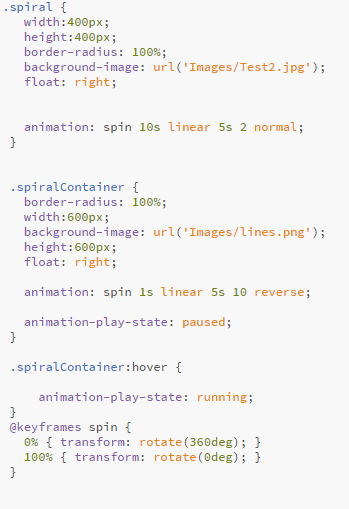

An animation lets an element gradually change from one style to another. You can change as many CSS properties you want, as many times you want. To use CSS animation, you must first specify some keyframes for the animation. Keyframes hold what styles the element will have at certain times.
